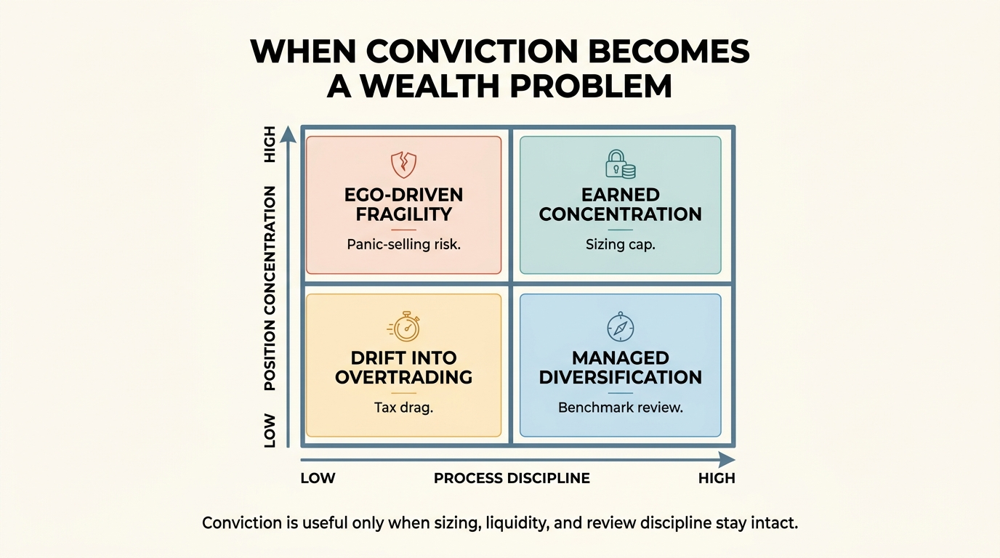

The Overconfidence Cycle
Most damaging wealth errors do not begin with obvious recklessness. They begin with evidence that looks flattering. A concentrated position works. A tactical trade lands. A market narrative happens to line up with the investor's portfolio. The gain feels like proof. Once that feeling hardens into identity, risk controls start getting rewritten around a false conclusion: that recent success revealed durable skill rather than some mixture of skill, regime, luck, and market beta.
That is why overconfidence should be treated as a capital-allocation process rather than as a personality defect. It changes sizing, turnover, reserve discipline, diversification, and the willingness to update after new information arrives. The damage usually appears before any visible blowup. The household becomes less governable first. The balance sheet becomes weaker later.
Core thesis: the overconfidence cycle has a repeatable sequence. Gains get attributed too heavily to skill. That attribution increases conviction. Higher conviction expands concentration or trading intensity. Expanded risk exposure weakens diversification, cash discipline, and humility. When the regime changes, the next mistake is larger and harder to reverse. The cycle is costly not because confidence exists, but because confidence is not discounted enough for uncertainty.

Why Overconfidence Matters At The Portfolio Level
Wealth survives through process more than through brilliance. A household can build durable capital by controlling turnover, taxes, liquidity, and concentration while allowing compounding to do most of the work. Overconfidence weakens each of those protections. It pushes investors toward more trading, more narrative loyalty, and more tolerance for becoming hostage to one thesis or one market regime.
Account-level evidence has supported this basic story for decades. Barber and Odean showed that the households trading most actively underperformed by a large margin after costs. Their later work using gender as a natural overconfidence proxy found that the more overconfident cohort traded more and reduced net returns more. Those papers do not say that all active decisions are irrational. They say that when confidence outruns calibration, excess trading becomes measurable and the wealth penalty becomes measurable too.
The practical implication is narrower than the rhetoric often used around behavioral finance. Overconfidence does not need to make every decision wrong to be expensive. It only needs to make the investor trade a bit too much, size a bit too aggressively, or ignore a bit too much contradictory evidence. The compounding effect of those small governance failures is enough.
The Cycle Starts When Success Gets Mis-scored
The first analytical failure is attribution. A recent gain can come from several sources at once: genuine insight, market beta, multiple expansion, falling rates, sector momentum, or plain path luck. Overconfidence begins when that mixed result is recorded in memory as mostly skill. Once that happens, the investor's internal benchmark shifts. The next idea feels safer than it is because the prior scorecard has already been edited.
This is why the cycle often begins with partial truth rather than fantasy. Many overconfident investors are competent in some domain. They may understand an industry, follow policy closely, or have better-than-average tolerance for volatility. The error is not that they know nothing. The error is that a narrow edge gets promoted into a broad edge. One correct call becomes evidence that concentration is deserved. One strong year becomes evidence that conventional risk controls are for less serious investors.
The household language then starts to change. Cash becomes dead capital. Rebalancing becomes a tax on intelligence. Diversification becomes diworsification. Insurance becomes an admission of fear. Each phrase can contain a grain of truth in some context. Inside the overconfidence cycle, they function mainly as justification devices for higher fragility.
Memory Bias Makes The Cycle Self-Reinforcing
Recent research makes the mechanism clearer. Walters and Fernbach showed that investors recall their past returns too positively and that larger memory bias is associated with more overconfidence and more trading frequency. That finding matters because it means the investor is not merely becoming optimistic. The investor is training on corrupted internal data. If the remembered scorecard is inflated, the next position size is being set on a bad foundation.
That distortion is powerful because it is subtle. Investors remember the bold trade that worked, but not the broad market tailwind that carried it. They remember the winner they held, but not the near misses, abandoned ideas, and lucky timing window. They remember conviction under pressure, but not the probability that the same behavior would have failed under a slightly different path. The psychological effect is a smoother personal track record than reality warrants.
Modern retail channels intensify the problem. Portfolio apps surface recent gains constantly. Social platforms reward certainty and screenshots. FINRA's 2026 social-media investor research found a visible knowledge-confidence gap among those using these channels. That does not prove all online investors are reckless. It does reinforce the idea that confidence can rise faster than actual understanding, especially when social proof and performance display are continuous.

Where The Balance-Sheet Damage Actually Appears
The first losses from overconfidence are often hidden. Turnover rises, which increases friction and taxes. Cash buffers shrink because every opportunity looks unusually compelling. Position count falls because diversification now feels unnecessary. Exit discipline becomes discretionary because reducing exposure would force an admission that prior certainty was overstated. None of this looks dramatic in a rising market. It still weakens the portfolio architecture.
The second form of damage is decision rigidity. A calibrated investor can scale down a thesis without treating it as a personal failure. An overconfident investor often cannot. New evidence feels adversarial because the position now protects identity, not just capital. This is why reversals become so costly. The analytical mistake is often small at the start. The refusal to govern size after the mistake appears is what turns it into a serious wealth event.
The third form of damage is household spillover. A portfolio run as an ego instrument distorts the rest of the financial system around it. Emergency reserves stay thinner than they should. Career risk is tolerated less flexibly because the household already depends on volatile capital. Tax, housing, and education decisions get forced to serve the portfolio rather than the other way around. Overconfidence therefore belongs in the same map as liquidity illusion and concentration drift. It is a structural wealth problem.
Overconfidence Also Fails During Stress
One common fantasy is that overconfident investors are at least steady under pressure. The newer evidence is less flattering. Research from Japan in 2025 found that financial-knowledge overconfidence was positively associated with panic selling during market stress even after controlling for financial literacy. The mechanism is coherent. If an investor overestimates their command of markets during good times, the shock of a bad regime can produce faster emotional dislocation, not calmer response.
That point matters because it breaks a common self-story. Many investors assume high conviction makes them resilient. Sometimes it does. Just as often it makes them brittle. The investor who believed they had unusual control over outcomes may react more violently when outcomes stop obeying the story. Overconfidence can therefore produce both excessive aggression on the way up and poor behavior on the way down.
What Healthy Conviction Looks Like Instead
The correction is not timid diversification by default. Some households should take selective concentration. Some operators do understand a business or sector better than the median participant. The real distinction is procedural. Healthy conviction survives hostile review, explicit downside mapping, hard sizing rules, and benchmark comparison after tax and after fees. Overconfidence tends to resist those disciplines because they cap the scale of the story.
- Use a sizing ceiling before emotion arrives. A hard cap prevents conviction from silently rewriting portfolio geometry.
- Review decisions separately from outcomes. Record what was knowable at entry and what part of the result came from market regime rather than edge.
- Track turnover and realized tax drag. These are practical overconfidence detectors, not administrative details.
- Protect the household liquidity layer. Opportunity should never consume the cash that preserves patience and mobility.
- Maintain a benchmark file. Compare active decisions against simple alternatives so self-assessment does not float free of evidence.
The broader household norm should be simple: good results do not automatically earn bigger risk. They earn more careful attribution. When every win immediately expands the scale of the next bet, the investor is not compounding insight. The investor is compounding vulnerability.
Known, Inferred, And Unknown
| Category | Assessment |
|---|---|
| Known | Higher trading intensity has long been associated with worse investor performance after costs. |
| Known | Overconfidence proxies are linked to heavier trading and lower net returns in household account data. |
| Known | Investors recall their past performance too positively, and that memory bias is associated with overconfidence and higher trading frequency. |
| Known | Recent survey evidence shows a knowledge-confidence gap among some social-media-informed retail investors and links financial-knowledge overconfidence to panic selling under stress. |
| Inferred | The main household damage from overconfidence usually arrives through concentration drift, liquidity erosion, tax drag, and slower updating before any headline blowup occurs. |
| Unknown | Which practical interventions reduce investor overconfidence most effectively without suppressing the healthy conviction required for rational long-horizon risk taking. |
The Practical Correction
The useful reframe is to stop treating confidence as a feeling and start treating it as a sizing input that needs a haircut. Skill can exist. Insight can exist. None of that removes uncertainty. Every gain should therefore trigger more forensic review, not less. What came from edge. What came from environment. What would have happened under a slightly worse path. Which reserve remains untouchable regardless of how attractive the thesis appears.
That is why the overconfidence cycle belongs on WealthMeter's structural map. It is not only a market bias. It is a governance error that makes later mistakes larger than earlier ones. The real wealth penalty is not being wrong once. It is becoming less governable after being right.
Further Reading Inside The Site
This article connects directly to The Concentration vs Diversification Tradeoff, The Liquidity Illusion, and The Asset-Rich, Cash-Poor Paradox. Together they show how conviction, concentration, and reserve weakness can combine into one household fragility pattern.
Source List
Barber BM, Odean T. Trading Is Hazardous to Your Wealth: The Common Stock Investment Performance of Individual Investors. Journal of Finance. 2000.
Barber BM, Odean T. Boys Will Be Boys: Gender, Overconfidence, and Common Stock Investment. Quarterly Journal of Economics. 2001.
Walters DJ, Fernbach PM. Investor Memory of Past Performance Is Positively Biased and Predicts Overconfidence. Proceedings of the National Academy of Sciences. 2021.
FINRA Investor Education Foundation. Research on Social-Media-Informed Retail Investors. April 2, 2026.
Bawalle AA, Khan MSR, Kadoya Y. Overconfidence, Financial Literacy, and Panic Selling: Evidence From Japan. PLOS One. 2025.